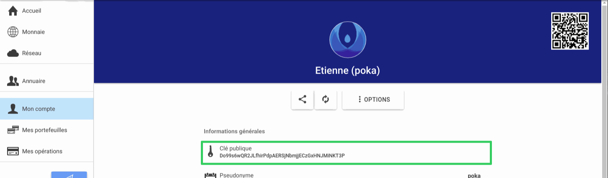

Digamos que ha puesto a la venta un artículo de segunda mano en ğchange o ha promocionado un servicio con ğirala.
El comprador seguramente le preguntará cuál es su clave pública, con el fin de enviarle el Ğ1 destinado a pagar por aquello que está vendiendo.
Encontrará su clave pública en la pestaña "Mi cuenta":

Simplemente haciendo clic en "Clave pública", se copia en el portapapeles.
A continuación, puede pegarlo en un mensaje, en ğchange o en ğirala, por ejemplo.